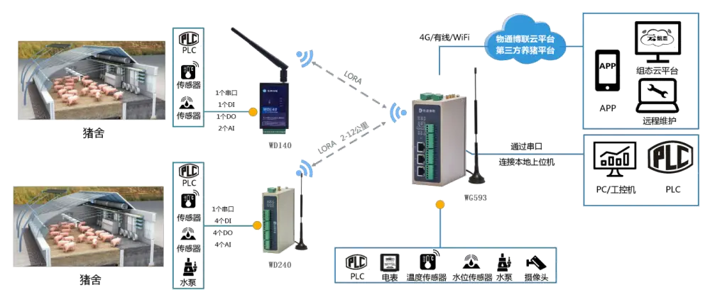
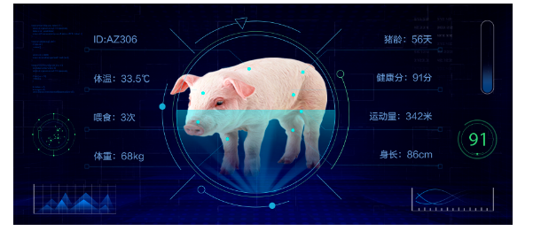
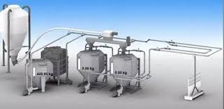
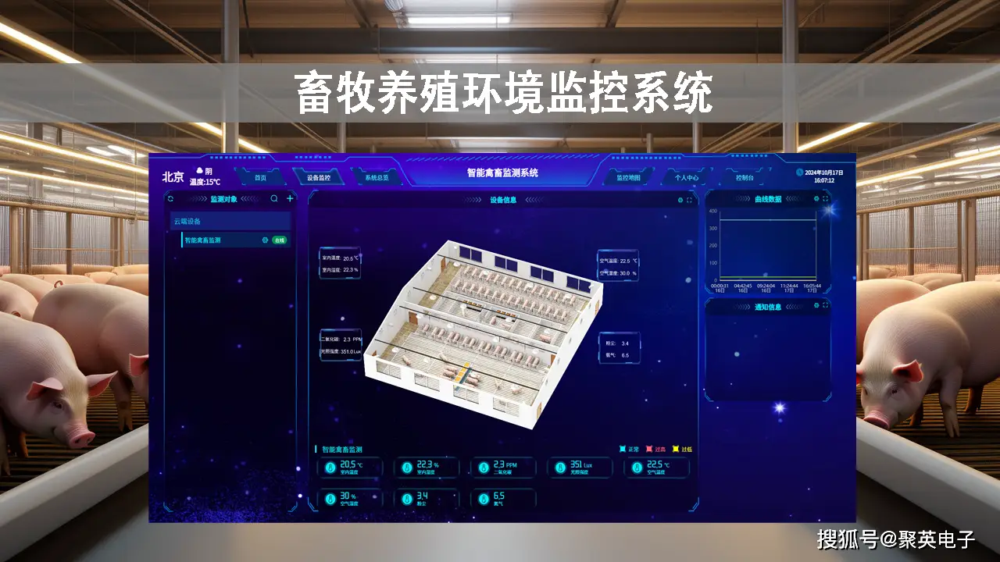

智能化基础设施架构

感知层
- 环境传感器阵列：部署于猪舍内部及周边的高密度传感器网络，由温湿度传感器、氨气浓度传感器等十余种物联设备构成。
- RFID耳标：通过在猪耳安装电子标签实现个体身份管理，标签内存储猪只生长、免疫等数据，配合读写器实时采集信息。整体提升猪场管理智能化水平。

平台层
- 大数据分析：通过整合猪场环境传感器、RFID耳标、自动饲喂系统等多源数据，构建养殖全流程数字模型。实现精准化、数据驱动的智慧养殖管理。
- 数字孪生系统：通过物联网设备实时采集猪舍温湿度、猪只行为等数据，在虚拟空间构建三维可视化养殖场动态模型，实现物理场域与数字镜像的同步映射。
核心子系统

智能饲喂系统
- 通过高精度称重传感器与电磁阀联动控制下料量，误差控制在±100g以内，结合猪只体重、日龄及生长曲线数据动态调整饲喂方案。
- 同时，饲料转化率提升： 20%

环境调控系统
- 采用分布式温度传感器网络与PID算法控制热泵机组，实现猪舍温度波动范围≤±1℃。
- 氨气浓度 <20ppm
效益提升
500头/人
传统人工效率
→
2000头/人
智慧管理效率